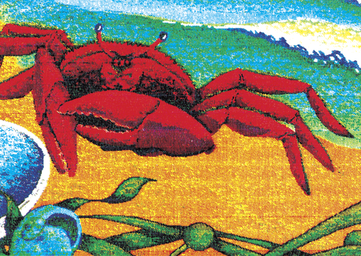
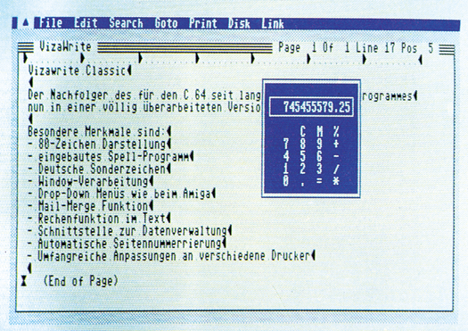
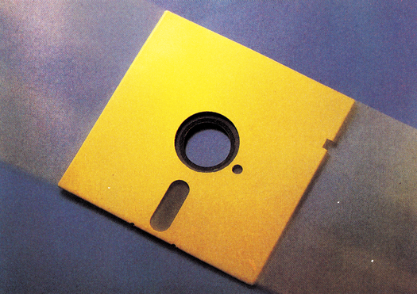

Vorschau
Hannover-Messe
Vom 12.03. bis zum 19.03. findet in Hannover die CeBIT statt. Die Erwartungen für die CeBIT sind hoch, denn für den C 64 und den C 128 sind in allen Bereichen von Soft- und Hardware brandheiße Neuheiten zu erwarten. Das gilt natürlich auch für die 16-Bit-Computer, vor allem, da die offizielle Einführung des Amiga zu erwarten ist. Wir waren für Sie auf der CeBIT in Hannover und berichten aktuell vom Stand der Dinge.
Einmalige Hardcopies
Ein Problem vieler Anwender ist es, hochauflösende Farbgrafiken vom Computer auf Papier zu bringen. Von der normalen Hardcopy-Routine bis hin zu solchen für Rasterzeilen-Interrupts und Sprites bieten wir für die verschiedensten Drucker Programme an. Selbst für den Plotter VC 1520 haben wir für Sie ein superschnelles Programm in Ascomp-Basic.
Hi-Eddi+ kontra Profi Painter
Gerade heutzutage ist Grafik-Software auf dem C 64 interessanter denn je. Das wird schon dadurch bestätigt, daß die Softwarefirmen immer bessere und leistungsfähigere Mal- und Zeichenprogramme auf den Markt bringen. In einem ausführlichen Test stellen wir Ihnen zwei neue Produkte vor, Hi-Eddi+ und Profi Painter. Bei beiden Programmen handelt es sich um neue Malprogramme. Hi-Eddi+ ist eine um viele Funktionen erweiterte Version von dem in Ausgabe 1/85 und Sonderheft 6/85 veröffentlichtem Programm Hi-Eddi. Profi Painter dagegen ist etwas völlig Neues. Hier wurde eine Benutzeroberfläche geschaffen, ähnlich wie bei GEM.
Jetzt wird's bunt
Durch Farbe eröffnen sich völlig neue Dimensionen. So werden beispielsweise Texte interessanter, Grafiken schöner und Tabellen übersichtlicher. Am reizvollsten ist es natürlich, mit einem Malprogramm erstellte Bilder in Form einer Hardcopy auszugeben. Wie Sie Ihre farbigen Bilder auf das Papier bringen können und welche Drucker oder Plotter dafür empfehlenswert sind, erfahren Sie in unserem Leistungsvergleich.

Vizawrite 128 Classic
Was darf man von der Weiterentwicklung eines Programms, das schon auf dem C 64 zu den Besten gehörte, erwarten? Wir beantworten die Frage, wie Vizawrite auf dem C 128 aussieht. Dabei erfahren Sie, wie man mit Windows, dem Taschenrechner und der Rechtschreibhilfe arbeitet. Erstaunliches gibt es auch über die Programmbedienung zu berichten.

Disk-Wizard
Mit diesem Listing des Monats werden Sie zum Zaubermeister über Ihre Disketten! Der Disk-Wizard enthält unter anderem einen komfortablen Diskettenmonitor und eine Sortierfunktion für die Directory-Einträge. Die Einträge lassen sich auch bezüglich Name, Filetyp etc. ändern; geöffnete Files können wieder geschlossen werden. Weiterhin können Sie formatierte Disketten »wiederbeleben«, Files schützen und und und…

Grafik und Computeranimation auf Großrechnern
Großrechner werden nicht nur dazu benutzt, Programme in Hochsprachen zu erstellen. Viel interessanter ist die Anwendung zur grafischen Darstellung beliebiger Körper. Auch bewegte Grafiken farbig oder schwarz/weiß sind auf großen Anlagen recht leicht zu realisieren, denn Speicherplatz und Geschwindigkeit bereiten im Gegensatz zum C 64 kein Problem. Was aber heute auf Großrechnern möglich ist, wird vielleicht morgen schon auf Heimcomputern funktionieren. Daher wollen wir Ihnen einmal vorführen, was sich mit solchen Großrechneranlagen anstellen läßt, und wie sich dreidimensionale Grafiken erstellen lassen.